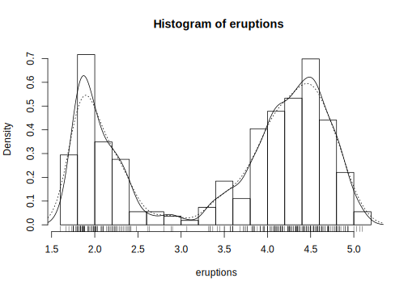
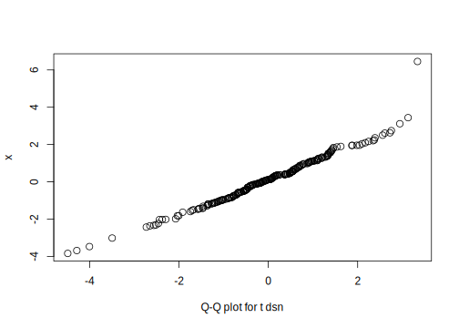

4.1 Command
# 2017-04-05 R-intro.pdf Chapter 08
pois## Error in eval(expr, envir, enclos): object 'pois' not found# ?dbeta
dnorm(0)## [1] 0.3989pnorm(0)## [1] 0.51 - pnorm(1.96)## [1] 0.025# ?pnorm
pnorm(1.96, lower.tail=FALSE)## [1] 0.025qnorm(0.5)## [1] 0qnorm(0.975)## [1] 1.96format(qnorm(0.975), digits=22)## [1] "1.9599639845400536"rnorm(5)## [1] 0.4687 0.2330 0.7733 -0.8327 0.9206rnorm(5, 10, 1)## [1] 9.388 9.189 9.228 10.208 9.840x = rnorm(100, 10, 1)
mean(x)## [1] 10.15sd(x)## [1] 0.95672*pt(-2.43, df = 13)## [1] 0.030332*pt(-2.43, df = 1000)## [1] 0.01527qnorm(0.995)## [1] 2.576qf(0.01, 2, 7, lower.tail = FALSE)## [1] 9.547# ?fivenum
faithful## eruptions waiting
## 1 3.600 79
## 2 1.800 54
## 3 3.333 74
## 4 2.283 62
## 5 4.533 85
## 6 2.883 55
## 7 4.700 88
## 8 3.600 85
## 9 1.950 51
## 10 4.350 85
## 11 1.833 54
## 12 3.917 84
## 13 4.200 78
## 14 1.750 47
## 15 4.700 83
## 16 2.167 52
## 17 1.750 62
## 18 4.800 84
## 19 1.600 52
## 20 4.250 79
## 21 1.800 51
## 22 1.750 47
## 23 3.450 78
## 24 3.067 69
## 25 4.533 74
## 26 3.600 83
## 27 1.967 55
## 28 4.083 76
## 29 3.850 78
## 30 4.433 79
## 31 4.300 73
## 32 4.467 77
## 33 3.367 66
## 34 4.033 80
## 35 3.833 74
## 36 2.017 52
## 37 1.867 48
## 38 4.833 80
## 39 1.833 59
## 40 4.783 90
## 41 4.350 80
## 42 1.883 58
## 43 4.567 84
## 44 1.750 58
## 45 4.533 73
## 46 3.317 83
## 47 3.833 64
## 48 2.100 53
## 49 4.633 82
## 50 2.000 59
## 51 4.800 75
## 52 4.716 90
## 53 1.833 54
## 54 4.833 80
## 55 1.733 54
## 56 4.883 83
## 57 3.717 71
## 58 1.667 64
## 59 4.567 77
## 60 4.317 81
## 61 2.233 59
## 62 4.500 84
## 63 1.750 48
## 64 4.800 82
## 65 1.817 60
## 66 4.400 92
## 67 4.167 78
## 68 4.700 78
## 69 2.067 65
## 70 4.700 73
## 71 4.033 82
## 72 1.967 56
## 73 4.500 79
## 74 4.000 71
## 75 1.983 62
## 76 5.067 76
## 77 2.017 60
## 78 4.567 78
## 79 3.883 76
## 80 3.600 83
## 81 4.133 75
## 82 4.333 82
## 83 4.100 70
## 84 2.633 65
## 85 4.067 73
## 86 4.933 88
## 87 3.950 76
## 88 4.517 80
## 89 2.167 48
## 90 4.000 86
## 91 2.200 60
## 92 4.333 90
## 93 1.867 50
## 94 4.817 78
## 95 1.833 63
## 96 4.300 72
## 97 4.667 84
## 98 3.750 75
## 99 1.867 51
## 100 4.900 82
## 101 2.483 62
## 102 4.367 88
## 103 2.100 49
## 104 4.500 83
## 105 4.050 81
## 106 1.867 47
## 107 4.700 84
## 108 1.783 52
## 109 4.850 86
## 110 3.683 81
## 111 4.733 75
## 112 2.300 59
## 113 4.900 89
## 114 4.417 79
## 115 1.700 59
## 116 4.633 81
## 117 2.317 50
## 118 4.600 85
## 119 1.817 59
## 120 4.417 87
## 121 2.617 53
## 122 4.067 69
## 123 4.250 77
## 124 1.967 56
## 125 4.600 88
## 126 3.767 81
## 127 1.917 45
## 128 4.500 82
## 129 2.267 55
## 130 4.650 90
## 131 1.867 45
## 132 4.167 83
## 133 2.800 56
## 134 4.333 89
## 135 1.833 46
## 136 4.383 82
## 137 1.883 51
## 138 4.933 86
## 139 2.033 53
## 140 3.733 79
## 141 4.233 81
## 142 2.233 60
## 143 4.533 82
## 144 4.817 77
## 145 4.333 76
## 146 1.983 59
## 147 4.633 80
## 148 2.017 49
## 149 5.100 96
## 150 1.800 53
## 151 5.033 77
## 152 4.000 77
## 153 2.400 65
## 154 4.600 81
## 155 3.567 71
## 156 4.000 70
## 157 4.500 81
## 158 4.083 93
## 159 1.800 53
## 160 3.967 89
## 161 2.200 45
## 162 4.150 86
## 163 2.000 58
## 164 3.833 78
## 165 3.500 66
## 166 4.583 76
## 167 2.367 63
## 168 5.000 88
## 169 1.933 52
## 170 4.617 93
## 171 1.917 49
## 172 2.083 57
## 173 4.583 77
## 174 3.333 68
## 175 4.167 81
## 176 4.333 81
## 177 4.500 73
## 178 2.417 50
## 179 4.000 85
## 180 4.167 74
## 181 1.883 55
## 182 4.583 77
## 183 4.250 83
## 184 3.767 83
## 185 2.033 51
## 186 4.433 78
## 187 4.083 84
## 188 1.833 46
## 189 4.417 83
## 190 2.183 55
## 191 4.800 81
## 192 1.833 57
## 193 4.800 76
## 194 4.100 84
## 195 3.966 77
## 196 4.233 81
## 197 3.500 87
## 198 4.366 77
## 199 2.250 51
## 200 4.667 78
## 201 2.100 60
## 202 4.350 82
## 203 4.133 91
## 204 1.867 53
## 205 4.600 78
## 206 1.783 46
## 207 4.367 77
## 208 3.850 84
## 209 1.933 49
## 210 4.500 83
## 211 2.383 71
## 212 4.700 80
## 213 1.867 49
## 214 3.833 75
## 215 3.417 64
## 216 4.233 76
## 217 2.400 53
## 218 4.800 94
## 219 2.000 55
## 220 4.150 76
## 221 1.867 50
## 222 4.267 82
## 223 1.750 54
## 224 4.483 75
## 225 4.000 78
## 226 4.117 79
## 227 4.083 78
## 228 4.267 78
## 229 3.917 70
## 230 4.550 79
## 231 4.083 70
## 232 2.417 54
## 233 4.183 86
## 234 2.217 50
## 235 4.450 90
## 236 1.883 54
## 237 1.850 54
## 238 4.283 77
## 239 3.950 79
## 240 2.333 64
## 241 4.150 75
## 242 2.350 47
## 243 4.933 86
## 244 2.900 63
## 245 4.583 85
## 246 3.833 82
## 247 2.083 57
## 248 4.367 82
## 249 2.133 67
## 250 4.350 74
## 251 2.200 54
## 252 4.450 83
## 253 3.567 73
## 254 4.500 73
## 255 4.150 88
## 256 3.817 80
## 257 3.917 71
## 258 4.450 83
## 259 2.000 56
## 260 4.283 79
## 261 4.767 78
## 262 4.533 84
## 263 1.850 58
## 264 4.250 83
## 265 1.983 43
## 266 2.250 60
## 267 4.750 75
## 268 4.117 81
## 269 2.150 46
## 270 4.417 90
## 271 1.817 46
## 272 4.467 74str(faithful)## 'data.frame': 272 obs. of 2 variables:
## $ eruptions: num 3.6 1.8 3.33 2.28 4.53 ...
## $ waiting : num 79 54 74 62 85 55 88 85 51 85 ...eruptions## Error in eval(expr, envir, enclos): object 'eruptions' not foundattach(faithful)
eruptions## [1] 3.600 1.800 3.333 2.283 4.533 2.883 4.700 3.600
## [9] 1.950 4.350 1.833 3.917 4.200 1.750 4.700 2.167
## [17] 1.750 4.800 1.600 4.250 1.800 1.750 3.450 3.067
## [25] 4.533 3.600 1.967 4.083 3.850 4.433 4.300 4.467
## [33] 3.367 4.033 3.833 2.017 1.867 4.833 1.833 4.783
## [41] 4.350 1.883 4.567 1.750 4.533 3.317 3.833 2.100
## [49] 4.633 2.000 4.800 4.716 1.833 4.833 1.733 4.883
## [57] 3.717 1.667 4.567 4.317 2.233 4.500 1.750 4.800
## [65] 1.817 4.400 4.167 4.700 2.067 4.700 4.033 1.967
## [73] 4.500 4.000 1.983 5.067 2.017 4.567 3.883 3.600
## [81] 4.133 4.333 4.100 2.633 4.067 4.933 3.950 4.517
## [89] 2.167 4.000 2.200 4.333 1.867 4.817 1.833 4.300
## [97] 4.667 3.750 1.867 4.900 2.483 4.367 2.100 4.500
## [105] 4.050 1.867 4.700 1.783 4.850 3.683 4.733 2.300
## [113] 4.900 4.417 1.700 4.633 2.317 4.600 1.817 4.417
## [121] 2.617 4.067 4.250 1.967 4.600 3.767 1.917 4.500
## [129] 2.267 4.650 1.867 4.167 2.800 4.333 1.833 4.383
## [137] 1.883 4.933 2.033 3.733 4.233 2.233 4.533 4.817
## [145] 4.333 1.983 4.633 2.017 5.100 1.800 5.033 4.000
## [153] 2.400 4.600 3.567 4.000 4.500 4.083 1.800 3.967
## [161] 2.200 4.150 2.000 3.833 3.500 4.583 2.367 5.000
## [169] 1.933 4.617 1.917 2.083 4.583 3.333 4.167 4.333
## [177] 4.500 2.417 4.000 4.167 1.883 4.583 4.250 3.767
## [185] 2.033 4.433 4.083 1.833 4.417 2.183 4.800 1.833
## [193] 4.800 4.100 3.966 4.233 3.500 4.366 2.250 4.667
## [201] 2.100 4.350 4.133 1.867 4.600 1.783 4.367 3.850
## [209] 1.933 4.500 2.383 4.700 1.867 3.833 3.417 4.233
## [217] 2.400 4.800 2.000 4.150 1.867 4.267 1.750 4.483
## [225] 4.000 4.117 4.083 4.267 3.917 4.550 4.083 2.417
## [233] 4.183 2.217 4.450 1.883 1.850 4.283 3.950 2.333
## [241] 4.150 2.350 4.933 2.900 4.583 3.833 2.083 4.367
## [249] 2.133 4.350 2.200 4.450 3.567 4.500 4.150 3.817
## [257] 3.917 4.450 2.000 4.283 4.767 4.533 1.850 4.250
## [265] 1.983 2.250 4.750 4.117 2.150 4.417 1.817 4.467waiting## [1] 79 54 74 62 85 55 88 85 51 85 54 84 78 47 83 52
## [17] 62 84 52 79 51 47 78 69 74 83 55 76 78 79 73 77
## [33] 66 80 74 52 48 80 59 90 80 58 84 58 73 83 64 53
## [49] 82 59 75 90 54 80 54 83 71 64 77 81 59 84 48 82
## [65] 60 92 78 78 65 73 82 56 79 71 62 76 60 78 76 83
## [81] 75 82 70 65 73 88 76 80 48 86 60 90 50 78 63 72
## [97] 84 75 51 82 62 88 49 83 81 47 84 52 86 81 75 59
## [113] 89 79 59 81 50 85 59 87 53 69 77 56 88 81 45 82
## [129] 55 90 45 83 56 89 46 82 51 86 53 79 81 60 82 77
## [145] 76 59 80 49 96 53 77 77 65 81 71 70 81 93 53 89
## [161] 45 86 58 78 66 76 63 88 52 93 49 57 77 68 81 81
## [177] 73 50 85 74 55 77 83 83 51 78 84 46 83 55 81 57
## [193] 76 84 77 81 87 77 51 78 60 82 91 53 78 46 77 84
## [209] 49 83 71 80 49 75 64 76 53 94 55 76 50 82 54 75
## [225] 78 79 78 78 70 79 70 54 86 50 90 54 54 77 79 64
## [241] 75 47 86 63 85 82 57 82 67 74 54 83 73 73 88 80
## [257] 71 83 56 79 78 84 58 83 43 60 75 81 46 90 46 74stem(waiting)##
## The decimal point is 1 digit(s) to the right of the |
##
## 4 | 3
## 4 | 55566666777788899999
## 5 | 00000111111222223333333444444444
## 5 | 555555666677788889999999
## 6 | 00000022223334444
## 6 | 555667899
## 7 | 00001111123333333444444
## 7 | 555555556666666667777777777778888888888888889999999999
## 8 | 000000001111111111111222222222222333333333333334444444444
## 8 | 55555566666677888888999
## 9 | 00000012334
## 9 | 6sort(eruptions)## [1] 1.600 1.667 1.700 1.733 1.750 1.750 1.750 1.750
## [9] 1.750 1.750 1.783 1.783 1.800 1.800 1.800 1.800
## [17] 1.817 1.817 1.817 1.833 1.833 1.833 1.833 1.833
## [25] 1.833 1.833 1.850 1.850 1.867 1.867 1.867 1.867
## [33] 1.867 1.867 1.867 1.867 1.883 1.883 1.883 1.883
## [41] 1.917 1.917 1.933 1.933 1.950 1.967 1.967 1.967
## [49] 1.983 1.983 1.983 2.000 2.000 2.000 2.000 2.017
## [57] 2.017 2.017 2.033 2.033 2.067 2.083 2.083 2.100
## [65] 2.100 2.100 2.133 2.150 2.167 2.167 2.183 2.200
## [73] 2.200 2.200 2.217 2.233 2.233 2.250 2.250 2.267
## [81] 2.283 2.300 2.317 2.333 2.350 2.367 2.383 2.400
## [89] 2.400 2.417 2.417 2.483 2.617 2.633 2.800 2.883
## [97] 2.900 3.067 3.317 3.333 3.333 3.367 3.417 3.450
## [105] 3.500 3.500 3.567 3.567 3.600 3.600 3.600 3.600
## [113] 3.683 3.717 3.733 3.750 3.767 3.767 3.817 3.833
## [121] 3.833 3.833 3.833 3.833 3.850 3.850 3.883 3.917
## [129] 3.917 3.917 3.950 3.950 3.966 3.967 4.000 4.000
## [137] 4.000 4.000 4.000 4.000 4.033 4.033 4.050 4.067
## [145] 4.067 4.083 4.083 4.083 4.083 4.083 4.100 4.100
## [153] 4.117 4.117 4.133 4.133 4.150 4.150 4.150 4.150
## [161] 4.167 4.167 4.167 4.167 4.183 4.200 4.233 4.233
## [169] 4.233 4.250 4.250 4.250 4.250 4.267 4.267 4.283
## [177] 4.283 4.300 4.300 4.317 4.333 4.333 4.333 4.333
## [185] 4.333 4.350 4.350 4.350 4.350 4.366 4.367 4.367
## [193] 4.367 4.383 4.400 4.417 4.417 4.417 4.417 4.433
## [201] 4.433 4.450 4.450 4.450 4.467 4.467 4.483 4.500
## [209] 4.500 4.500 4.500 4.500 4.500 4.500 4.500 4.517
## [217] 4.533 4.533 4.533 4.533 4.533 4.550 4.567 4.567
## [225] 4.567 4.583 4.583 4.583 4.583 4.600 4.600 4.600
## [233] 4.600 4.617 4.633 4.633 4.633 4.650 4.667 4.667
## [241] 4.700 4.700 4.700 4.700 4.700 4.700 4.716 4.733
## [249] 4.750 4.767 4.783 4.800 4.800 4.800 4.800 4.800
## [257] 4.800 4.817 4.817 4.833 4.833 4.850 4.883 4.900
## [265] 4.900 4.933 4.933 4.933 5.000 5.033 5.067 5.100hist(eruptions)hist(eruptions, seq(1.6, 5.2, 0.2), prob=TRUE)
lines(density(eruptions, bw=0.1))
rug(eruptions)
# ?hist
# ?density
lines(density(eruptions, bw="SJ"), lty=3)
plot(ecdf(eruptions), do.points=FALSE, verticals=TRUE)# ?plot
ecdf(eruptions)## Empirical CDF
## Call: ecdf(eruptions)
## x[1:126] = 1.6, 1.7, 1.7, ..., 5.1, 5.1x = ecdf(eruptions)
x## Empirical CDF
## Call: ecdf(eruptions)
## x[1:126] = 1.6, 1.7, 1.7, ..., 5.1, 5.1str(x)## function (v)
## - attr(*, "class")= chr [1:3] "ecdf" "stepfun" "function"
## - attr(*, "call")= language ecdf(eruptions)x()## Error in .approxfun(x, y, v, method, yleft, yright, f): argument "v" is missing, with no defaultplot(ecdf(eruptions), do.points=FALSE)plot(ecdf(eruptions))long <- eruptions[eruptions > 3]
x <- seq(3, 5.4, 0.01)
pnorm(x, mean=mean(long), sd=sqrt(var(long)))## [1] 0.0008362 0.0009084 0.0009864 0.0010704 0.0011610
## [6] 0.0012585 0.0013635 0.0014764 0.0015978 0.0017282
## [11] 0.0018682 0.0020185 0.0021797 0.0023524 0.0025375
## [16] 0.0027356 0.0029476 0.0031743 0.0034165 0.0036752
## [21] 0.0039514 0.0042460 0.0045601 0.0048947 0.0052511
## [26] 0.0056304 0.0060338 0.0064627 0.0069183 0.0074020
## [31] 0.0079152 0.0084596 0.0090365 0.0096475 0.0102944
## [36] 0.0109788 0.0117024 0.0124670 0.0132746 0.0141269
## [41] 0.0150260 0.0159739 0.0169725 0.0180241 0.0191306
## [46] 0.0202945 0.0215177 0.0228028 0.0241519 0.0255674
## [51] 0.0270518 0.0286074 0.0302366 0.0319421 0.0337262
## [56] 0.0355915 0.0375406 0.0395759 0.0417001 0.0439157
## [61] 0.0462253 0.0486315 0.0511367 0.0537436 0.0564547
## [66] 0.0592723 0.0621991 0.0652374 0.0683897 0.0716581
## [71] 0.0750451 0.0785529 0.0821835 0.0859391 0.0898217
## [76] 0.0938331 0.0979753 0.1022500 0.1066587 0.1112030
## [81] 0.1158842 0.1207037 0.1256626 0.1307619 0.1360025
## [86] 0.1413850 0.1469102 0.1525783 0.1583896 0.1643443
## [91] 0.1704423 0.1766832 0.1830667 0.1895922 0.1962589
## [96] 0.2030658 0.2100116 0.2170952 0.2243149 0.2316689
## [101] 0.2391554 0.2467722 0.2545170 0.2623872 0.2703803
## [106] 0.2784932 0.2867229 0.2950662 0.3035195 0.3120794
## [111] 0.3207419 0.3295032 0.3383590 0.3473052 0.3563373
## [116] 0.3654507 0.3746407 0.3839025 0.3932310 0.4026213
## [121] 0.4120681 0.4215661 0.4311100 0.4406943 0.4503134
## [126] 0.4599618 0.4696339 0.4793239 0.4890262 0.4987349
## [131] 0.5084444 0.5181489 0.5278427 0.5375199 0.5471751
## [136] 0.5568024 0.5663963 0.5759512 0.5854617 0.5949224
## [141] 0.6043279 0.6136730 0.6229527 0.6321619 0.6412957
## [146] 0.6503494 0.6593184 0.6681982 0.6769845 0.6856732
## [151] 0.6942601 0.7027416 0.7111139 0.7193735 0.7275172
## [156] 0.7355417 0.7434443 0.7512220 0.7588724 0.7663930
## [161] 0.7737818 0.7810366 0.7881558 0.7951377 0.8019809
## [166] 0.8086842 0.8152465 0.8216671 0.8279453 0.8340805
## [171] 0.8400726 0.8459213 0.8516267 0.8571890 0.8626087
## [176] 0.8678862 0.8730222 0.8780176 0.8828733 0.8875905
## [181] 0.8921703 0.8966142 0.9009236 0.9051002 0.9091456
## [186] 0.9130615 0.9168500 0.9205130 0.9240526 0.9274708
## [191] 0.9307700 0.9339522 0.9370200 0.9399756 0.9428215
## [196] 0.9455601 0.9481939 0.9507254 0.9531571 0.9554916
## [201] 0.9577315 0.9598792 0.9619375 0.9639088 0.9657957
## [206] 0.9676007 0.9693264 0.9709753 0.9725498 0.9740525
## [211] 0.9754857 0.9768519 0.9781534 0.9793926 0.9805717
## [216] 0.9816930 0.9827587 0.9837709 0.9847318 0.9856434
## [221] 0.9865077 0.9873267 0.9881024 0.9888365 0.9895310
## [226] 0.9901874 0.9908077 0.9913933 0.9919460 0.9924672
## [231] 0.9929585 0.9934212 0.9938569 0.9942668 0.9946523
## [236] 0.9950145 0.9953548 0.9956741 0.9959737 0.9962546
## [241] 0.9965177# ?par
x <- rt(250, df = 5)
qqnorm(x); qqline(x)
curve(dnorm, -5, 5)
y = density(x)
lines(y, lty=3)# ?ppoints
ppoints(250)## [1] 0.002 0.006 0.010 0.014 0.018 0.022 0.026 0.030
## [9] 0.034 0.038 0.042 0.046 0.050 0.054 0.058 0.062
## [17] 0.066 0.070 0.074 0.078 0.082 0.086 0.090 0.094
## [25] 0.098 0.102 0.106 0.110 0.114 0.118 0.122 0.126
## [33] 0.130 0.134 0.138 0.142 0.146 0.150 0.154 0.158
## [41] 0.162 0.166 0.170 0.174 0.178 0.182 0.186 0.190
## [49] 0.194 0.198 0.202 0.206 0.210 0.214 0.218 0.222
## [57] 0.226 0.230 0.234 0.238 0.242 0.246 0.250 0.254
## [65] 0.258 0.262 0.266 0.270 0.274 0.278 0.282 0.286
## [73] 0.290 0.294 0.298 0.302 0.306 0.310 0.314 0.318
## [81] 0.322 0.326 0.330 0.334 0.338 0.342 0.346 0.350
## [89] 0.354 0.358 0.362 0.366 0.370 0.374 0.378 0.382
## [97] 0.386 0.390 0.394 0.398 0.402 0.406 0.410 0.414
## [105] 0.418 0.422 0.426 0.430 0.434 0.438 0.442 0.446
## [113] 0.450 0.454 0.458 0.462 0.466 0.470 0.474 0.478
## [121] 0.482 0.486 0.490 0.494 0.498 0.502 0.506 0.510
## [129] 0.514 0.518 0.522 0.526 0.530 0.534 0.538 0.542
## [137] 0.546 0.550 0.554 0.558 0.562 0.566 0.570 0.574
## [145] 0.578 0.582 0.586 0.590 0.594 0.598 0.602 0.606
## [153] 0.610 0.614 0.618 0.622 0.626 0.630 0.634 0.638
## [161] 0.642 0.646 0.650 0.654 0.658 0.662 0.666 0.670
## [169] 0.674 0.678 0.682 0.686 0.690 0.694 0.698 0.702
## [177] 0.706 0.710 0.714 0.718 0.722 0.726 0.730 0.734
## [185] 0.738 0.742 0.746 0.750 0.754 0.758 0.762 0.766
## [193] 0.770 0.774 0.778 0.782 0.786 0.790 0.794 0.798
## [201] 0.802 0.806 0.810 0.814 0.818 0.822 0.826 0.830
## [209] 0.834 0.838 0.842 0.846 0.850 0.854 0.858 0.862
## [217] 0.866 0.870 0.874 0.878 0.882 0.886 0.890 0.894
## [225] 0.898 0.902 0.906 0.910 0.914 0.918 0.922 0.926
## [233] 0.930 0.934 0.938 0.942 0.946 0.950 0.954 0.958
## [241] 0.962 0.966 0.970 0.974 0.978 0.982 0.986 0.990
## [249] 0.994 0.998ppoints(10)## [1] 0.06098 0.15854 0.25610 0.35366 0.45122 0.54878
## [7] 0.64634 0.74390 0.84146 0.93902qqplot(qt(ppoints(250), df = 5), x, xlab = "Q-Q plot for t dsn")windows()
qqplot(qt(runif(250), df = 5), x, xlab = "Q-Q plot for t dsn")
# ?shapiro.test
# ?ks.test
# ?t.test
A = c(79.98, 80.04, 80.02, 80.04, 80.03, 80.03, 80.04, 79.97, 80.05, 80.03, 80.02, 80.00, 80.02)
B = c(80.02, 79.94, 79.98, 79.97, 79.97, 80.03, 79.95, 79.97)
boxplot(A, B)t.test(A, B)##
## Welch Two Sample t-test
##
## data: A and B
## t = 3.2, df = 12, p-value = 0.007
## alternative hypothesis: true difference in means is not equal to 0
## 95 percent confidence interval:
## 0.01386 0.07018
## sample estimates:
## mean of x mean of y
## 80.02 79.98var.test(A, B)##
## F test to compare two variances
##
## data: A and B
## F = 0.58, num df = 12, denom df = 7, p-value =
## 0.4
## alternative hypothesis: true ratio of variances is not equal to 1
## 95 percent confidence interval:
## 0.1251 2.1053
## sample estimates:
## ratio of variances
## 0.5837t.test(A, B, var.equal=TRUE)##
## Two Sample t-test
##
## data: A and B
## t = 3.5, df = 19, p-value = 0.003
## alternative hypothesis: true difference in means is not equal to 0
## 95 percent confidence interval:
## 0.01669 0.06735
## sample estimates:
## mean of x mean of y
## 80.02 79.98wilcox.test(A, B)## Warning in wilcox.test.default(A, B): cannot compute
## exact p-value with ties##
## Wilcoxon rank sum test with continuity
## correction
##
## data: A and B
## W = 89, p-value = 0.007
## alternative hypothesis: true location shift is not equal to 0plot(ecdf(A), do.points=FALSE, verticals=TRUE, xlim=range(A, B))
plot(ecdf(B), do.points=FALSE, verticals=TRUE, add=TRUE)ks.test(A, B)## Warning in ks.test(A, B): cannot compute exact p-value
## with ties##
## Two-sample Kolmogorov-Smirnov test
##
## data: A and B
## D = 0.6, p-value = 0.06
## alternative hypothesis: two-sided# Chapter 9 Grouping, loops and conditional execution
# { } does grouping
# Usefulness of loops: for >> while >> repeat
for (i in 1:10) {
print(2*i)
}## [1] 2
## [1] 4
## [1] 6
## [1] 8
## [1] 10
## [1] 12
## [1] 14
## [1] 16
## [1] 18
## [1] 20for (i in 1:10) print(2*i)## [1] 2
## [1] 4
## [1] 6
## [1] 8
## [1] 10
## [1] 12
## [1] 14
## [1] 16
## [1] 18
## [1] 20#while ( ) {
## Statements
#}
# # if ~ else ~
# if ( ) {
# # Statements 1
# } else {
# # Statements 2
# }
#
# if ( ) # Statement1
# else # Statement2
#
# if ( ) {
# # Statements 1
# } else if ( ) {
# # Statements 2
# } else if ( ) {
# # Statements 3
# } else {
# # Statements 4
# }
#
#
# Chapter 10 Writing your own functions
Square = function(x=0)
{
return(x*x)
}
twosam = function(y1, y2)
{
n1 = length(y1)
n2 = length(y2)
yb1 = mean(y1)
yb2 = mean(y2)
s1 = var(y1)
s2 = var(y2)
s = ((n1 - 1)*s1 + (n2 - 1)*s2)/(n1 + n2 - 2)
tst = (yb1 - yb2)/sqrt(s*(1/n1 + 1/n2))
return (tst)
}
x = rnorm(10)
y = rt(10, 5)
twosam(x, y)## [1] 2.875T.test = function(y1, y2)
{
n1 = length(y1)
n2 = length(y2)
yb1 = mean(y1)
yb2 = mean(y2)
s1 = var(y1)
s2 = var(y2)
s = ((n1 - 1)*s1 + (n2 - 1)*s2)/(n1 + n2 - 2)
tst = (yb1 - yb2)/sqrt(s*(1/n1 + 1/n2))
DF = n1 + n2 - 2
p.val = 2*(1 - pt(abs(tst), df=DF))
Res = list(tst, DF, p.val, yb1, yb2)
names(Res) = c("t", "df", "p-value", "mean of x", "mean of y")
return (Res)
}
res = T.test(x, y)
t.test(x, y)##
## Welch Two Sample t-test
##
## data: x and y
## t = 2.9, df = 18, p-value = 0.01
## alternative hypothesis: true difference in means is not equal to 0
## 95 percent confidence interval:
## 0.219 1.416
## sample estimates:
## mean of x mean of y
## 0.74314 -0.07442bslash = function(X, y)
{
X = qr(X)
return (qr.coef(X, y))
}
regcoeff = bslash(Xmat, yvar)## Error in qr(X): object 'Xmat' not found"%^%" = function(S, pow) with(eigen(S), vectors %*% (abs(values)^pow * t(vectors)))
M = matrix(c(2,1,1,2), nrow=2) ; M## [,1] [,2]
## [1,] 2 1
## [2,] 1 2M %^% 0.5## [,1] [,2]
## [1,] 1.366 0.366
## [2,] 0.366 1.366sqrtM = M%^%0.5 ; sqrtM## [,1] [,2]
## [1,] 1.366 0.366
## [2,] 0.366 1.366sqrtM %*% sqrtM## [,1] [,2]
## [1,] 2 1
## [2,] 1 2area = function(f, a, b, eps=1.0e-06, lim=10)
{
fun1 = function(f, a, b, fa, fb, a0, eps, lim, fun)
{
## function 'fun1’is only visible inside 'area’
d = (a + b)/2
h = (b - a)/4
fd = f(d)
a1 = h * (fa + fd)
a2 = h * (fd + fb)
if (abs(a0 - a1 - a2) < eps || lim == 0)
return (a1 + a2)
else {
return (fun(f, a, d, fa, fd, a1, eps, lim - 1, fun) + fun(f, d, b, fd, fb, a2, eps, lim - 1, fun))
}
}
fa = f(a)
fb = f(b)
a0 = ((fa + fb) * (b - a))/2
fun1(f, a, b, fa, fb, a0, eps, lim, fun1)
}
area(dnorm, 0, 1)## [1] 0.3413integrate(dnorm, 0, 1)## 0.3413 with absolute error < 3.8e-15pnorm(1) - pnorm(0)## [1] 0.3413f = function(x)
{
y = 2*x
print(x)
print(y)
print(z)
}
f(1)## [1] 1
## [1] 2## Error in print(z): object 'z' not foundz = 3
f(1)## [1] 1
## [1] 2
## [1] 3cube = function(n) {
sq = function() n*n
n*sq()
}
cube(5)## [1] 125open.account = function(total)
{
list(
deposit = function(amount)
{
if(amount <= 0)
stop("Deposits must be positive!\n")
total <<- total + amount
cat(amount, "deposited. Your balance is", total, "\n\n")
},
withdraw = function(amount)
{
if(amount > total)
stop("You don’t have that much money!\n")
total <<- total - amount
cat(amount, "withdrawn. Your balance is", total, "\n\n")
},
balance = function()
{
cat("Your balance is", total, "\n\n")
}
)
}
ross = open.account(100)
robert = open.account(200)
ross$balance()## Your balance is 100robert$balance()## Your balance is 200ross$deposit(50)## 50 deposited. Your balance is 150ross$balance()## Your balance is 150ross$withdraw(500)## Error in ross$withdraw(500): You don’t have that much money!# More basic keywords and functions
1 %in% c(1,2,3,4)## [1] TRUE5 %in% c(1,2,3,4)## [1] FALSEis.finite(Inf)## [1] FALSEprod(1:3)## [1] 6cummax(1:10)## [1] 1 2 3 4 5 6 7 8 9 10cummax(10:1)## [1] 10 10 10 10 10 10 10 10 10 10# ?xor
x = 11:20
x## [1] 11 12 13 14 15 16 17 18 19 20which(x==3)## integer(0)which(x==13)## [1] 3length(x)## [1] 10y = "my string"
length(y)## [1] 1nchar(y)## [1] 9strsplit(y, " ")## [[1]]
## [1] "my" "string"strsplit(y, " ")[[1]]## [1] "my" "string"substr(y, 4, 5)## [1] "st"sample(1:10)## [1] 8 6 7 9 10 3 2 4 5 1sample(1:10, 20)## Error in sample.int(length(x), size, replace, prob): cannot take a sample larger than the population when 'replace = FALSE'sample(1:10, 20, replace=TRUE)## [1] 6 9 9 3 4 6 2 10 7 4 1 3 9 4 6 2 10
## [18] 5 3 2sample(rep(1:10,2))## [1] 7 1 4 9 10 5 3 10 5 8 7 6 1 2 6 4 9
## [18] 8 3 2